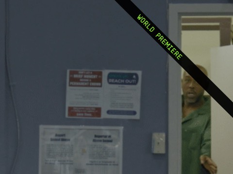
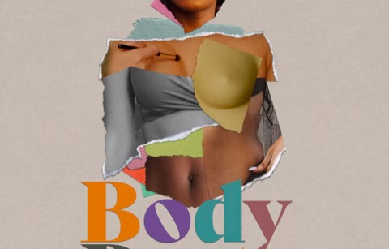
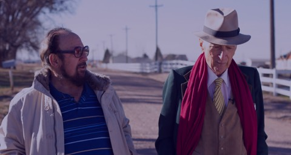

Women, gender & sexuality
Gender violence, women's rights, LGBTQ lives.
18 films · 13 sessions · 82 people
Often together with: ReligionMigration & bordersRace & civil rightsDocumentary craftCriminal justice & prisonsWar, conflict & the military
Films
 Free Joan LittleYoruba Richen2026 · 36 min
Free Joan LittleYoruba Richen2026 · 36 min My Brother's KillerRachel Mason2026 · 95 min
My Brother's KillerRachel Mason2026 · 95 min- Short Strand: Minneapolis: On the Record + A Special ScreeningLaura Poitras, Rachel Lauren Mueller, Annie Sundberg2026
- Ask E. JeanIvy Meeropol2025 · 91 min

In Exchange for FleshCorey Devon Arthur, Sandro Ramani2025 · 15 min Magic & MonstersNorah Shapiro2025 · 89 min
Magic & MonstersNorah Shapiro2025 · 89 min 1946: The Mistranslation That Shifted CultureSharon “Rocky” Roggio2023 · 92 min
1946: The Mistranslation That Shifted CultureSharon “Rocky” Roggio2023 · 92 min- Beneath the Surfacecai thomas2023 · 6 min
- Sorry / Not SorryCaroline Suh, Cara Mones2023 · 90 min

Body PartsKristy Guevara-Flanagan2022 · 90 min- UnrelinquishedAmina Waheed2021 · 26 min
 Belly of the BeastErika Cohn2020 · 82 min
Belly of the BeastErika Cohn2020 · 82 min Welcome to Chechnya: Inside The Russian Republic’s Deadly War On GaysWelcome to Chechnya2020 · 107 min
Welcome to Chechnya: Inside The Russian Republic’s Deadly War On GaysWelcome to Chechnya2020 · 107 min Bikram: Yogi, Guru, PredatorEva Orner2019 · 86 min
Bikram: Yogi, Guru, PredatorEva Orner2019 · 86 min Divide and Conquer: The Story of Roger AilesAlexis Bloom2018 · 107 min
Divide and Conquer: The Story of Roger AilesAlexis Bloom2018 · 107 min Roll Red RollNancy Schwartzman2018 · 80 min
Roll Red RollNancy Schwartzman2018 · 80 min The Rape of Recy TaylorNancy Buirski2017 · 91 min
The Rape of Recy TaylorNancy Buirski2017 · 91 min
VoyeurMyles Kane, Josh Koury2017 · 95 min
Sessions
- 2026 · Fri Nov 6 · 10:35amPanelYour City Your StoryLois Nembhard, Sonam Vashi, George Kevin Jordan, Noah Kincade, Rachel Mason
- 2024 · Sat Nov 9 · 10:00 AMWorkshopWorkshop: Self-Care for Filmmakers: The Trauma Aware ToolkitJudith Matloff
- 2022 · Thu Oct 13 · 11:30 AMPanel · DX²Reframing RepresentationRintu Thomas, Patricia Aufderheide, Sushmit Ghosh, June Cross
- 2021 · Fri Oct 15 · 9:30amPanel · DX²Constructing the New/s: Year OneJessica Clark, Farai Chideya
- 2019 · Fri Oct 11 · 9:30amPanel · DX²#MeTooAnnie Sundberg, Casey Frank, Emily Michot, Ricki Stern, Janice Page
- 2019 · Fri Oct 11 · 9:30 AMPanel#MeToo 2.0Casey Frank, Emily Michot, Ricki Stern, Annie Sundberg, Janice Page
- 2019 · Sat Oct 12 · 10:00 AMPitchCrossing BordersAnne Alvergue, Debra McClutchy, Maren Machles, Carrie Cochran, Jason Fitzroy Jeffers, Jess Swanson, Amanda Pike, Neela Banerjee, Nicole…
- 2019 · Fri Oct 11 · 9:45 AMPitchDocs in Progress PitchSara Barger, Amy Marquis, Jennifer Huang, Rodrigo Dorfman, Peter Eversoll, cai thomas, Serena Ajbani, Andrea Raby
- 2019 · Thu Oct 11 · 9:30amPanel · DX²Supreme Truth: From High School Halls to Hallowed WallsCheryl W. Thompson, Elizabeth Bruenig, Nancy Schwartzman
- 2018EventDX Fledgling Fund Fellowship and DX Scholarship
- 2018 · Thu Oct 11 · 9:30 AMConversationOpening Conversation: Supreme Truth: From High School Halls to Hallowed WallsElizabeth Bruenig, Nancy Schwartzman, Cheryl W. Thompson
- 2017 · Fri Oct 20 · 4:30 PMConversationAnatomy of a Serial: Closing Conversation with Ryan White and Jean Wehner, The KeepersRyan White, Jean Wehner, Gilbert Cruz
- 2015 · Fri Oct 2 · 1:30 PMConversationAlex Gibney, in Conversation with Franklin FoerFranklin Foer, Alex Gibney
People most involved
- Nancy SchwartzmanPanelist, filmmaker · 2 editions, 2018–2019

- Alexis BloomFilmmaker, panelist · 2018
 Sharon “Rocky” RoggioFilmmaker, panelist · 2023
Sharon “Rocky” RoggioFilmmaker, panelist · 2023 cai thomasFilmmaker, panelist, workshop leader · 2 editions, 2019–2023
cai thomasFilmmaker, panelist, workshop leader · 2 editions, 2019–2023- Ivy MeeropolFilmmaker, panelist · 2 editions, 2019–2025
- Norah ShapiroPanelist, filmmaker · 2025
 Anthony EdwardsFilmmaker, panelist · 2025
Anthony EdwardsFilmmaker, panelist · 2025 Corey Devon ArthurPanelist, filmmaker · 2025
Corey Devon ArthurPanelist, filmmaker · 2025 Sandro RamaniPanelist, filmmaker · 2025
Sandro RamaniPanelist, filmmaker · 2025 Yoruba RichenFilmmaker, panelist · 3 editions, 2023–2026Newmark Graduate School of Journalism at CUNY
Yoruba RichenFilmmaker, panelist · 3 editions, 2023–2026Newmark Graduate School of Journalism at CUNY Rachel MasonPanelist, filmmaker · 2026
Rachel MasonPanelist, filmmaker · 2026- Nancy BuirskiFilmmaker · 2017
- Recy TaylorFilm subject · 2017
- Myles KaneFilmmaker · 2017
- Josh KouryFilmmaker · 2017
- Gay TaleseFilm subject · 2017
- Gerald FoosFilm subject · 2017
- Alexandria GoddardFilm subject, panelist · 2018
- Will CohenFilmmaker · 2018
- Roger AilesFilm subject · 2018
 Eva OrnerFilmmaker · 2 editions, 2019–2021
Eva OrnerFilmmaker · 2 editions, 2019–2021- Sarah AnthonyFilmmaker · 2019


 Caroline SuhFilmmaker · 2023
Caroline SuhFilmmaker · 2023